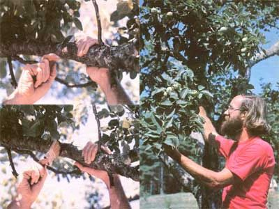

Here's a way to "encourage" apple trees that are reluctant to set fruit.
As summer begins to wind down (perhaps fooling us, a time or two, into thinking we've seen the last of its sweltering days for this year), orchard keepers look forward to sampling the joys of harvest time. Unfortunately, apple trees occasionally for no reason apparent to the grower-just up and stop bearing for a while.
Over the years any number of methods have been devised to force nonbearing trees to produce. Many old-time pomology books recommend root pruning ...which involves marking a circle on the ground around the trunk, just inside the drip line, then dividing the scribed area into six pie-shaped wedges and digging about two feet deep-severing any roots encountered along the arcs formed by the outer edges of three alternating segments. Another "traditional" fruit encourager actually consisted of blasting away at the tree's trunk several times with a shotgun!
Strangely enough, both of those techniques often worked ...that is, provided the "patient" survived the abuse. Each of the methods served to accomplish the same goal: to slow down or otherwise interfere with the tree's nutrient intake, causing it to reduce its production of new leaf and limb growth in order to set fruit.
Nowadays, as you'd imagine, there are chemical preparations available to restrict vegetative production and promote fruit setting. However, should you choose to avoid such substances, you can try another old-timer's trick that works for me and seems to do less harm to the tree than either root pruning or "shotgun logic". The method is called scoring, and simply consists of using a pocketknife or linoleum knife (on trees up to six inches in diameter), or a hacksaw (when working with a large specimen) to make a cut-through the bark but not into the wood completely around either one or two limbs or the trunk of the tree itself.
Scoring shuts off the tree's nutrient intake during the two weeks required for the inner bark (the cambium layer) to repair itself. This causes some carbohydrates-which would otherwise be transported to the roots-to accumulate in the leaves and twigs, where they're. put to use in forming new fruit buds. The result is usually heavy flowering and good fruit production the next season.
The best time to try this trick is about two or three weeks after full bloom. since that's when most apple trees initiate fruit buds for the subsequent year. (Remember that if you give the treatment to this autumn's barren trees next spring, you'll still have to wait until the following year for your efforts-and trees-to bear fruit.)
If you're trying to rejuvenate more than one tree, be sure to disinfect your knife or saw after each cut to prevent the inadvertent spreading of fire blight ...and whether you're working with one tree or several-always cover the wounds with a grafting compound to avoid infection.
Of course, scoring is a pretty serious step ...one that could damage a weak or very young tree. However, if you're faced with a rugged, mature specimen that plain doesn't want to cooperate with your apple-producing plans, you might just be glad to "know the score".
EDITOR'S NOTE: Scoring has also been said to work on pear trees, but extra care should be taken to prevent infection and or fire blight. Plums and peaches don't respond well to this treatment. Don't attempt to score any trees that show poor vigor or that are too immature-the age will vary by species-to be expected to set fruit.
|
 TOP TO BOTTOM: Sometimes a stubborn but otherwise healthy apple tree has to be ""encouraged"" to set fruit. By cutting completely around the trunk or several limbs -through the bark but not into the wood la technique called scoring) ...then treating the cut with grafting compound ...the orchardist can often make the reluctant tree productive again! |
|
|